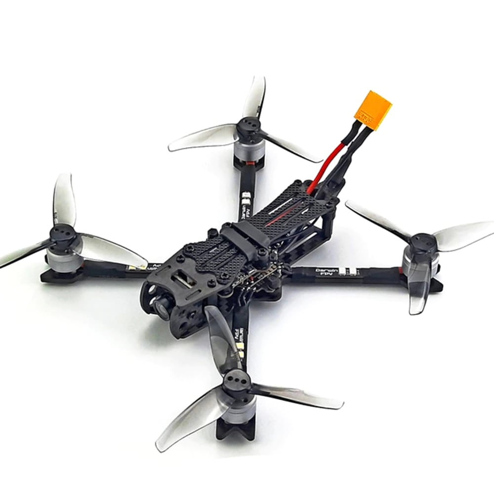
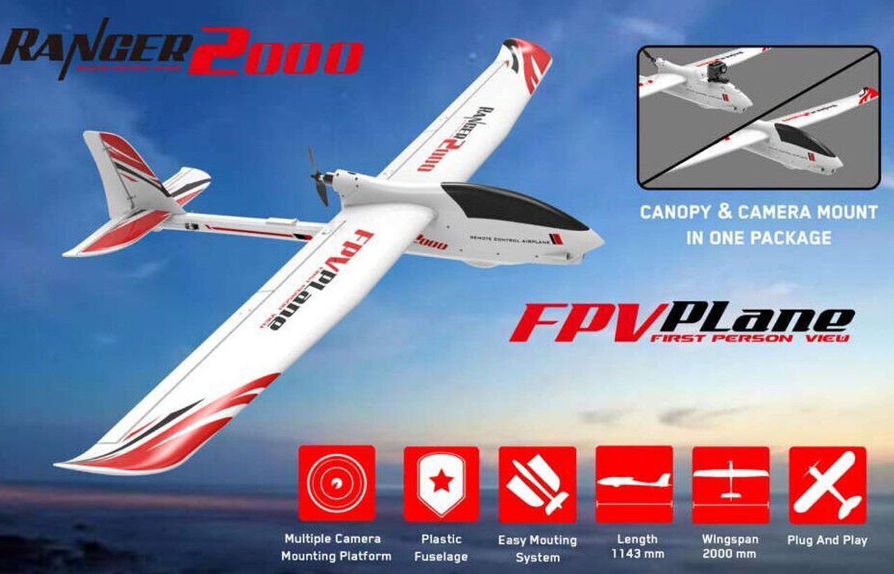

Drones are getting very popular in this hobby and there are many different types from toys to professional filming equipment.
FPV (first person view) flight is very different than LOS (line of sight) flight because you are seeing through the camera mounted on the drone!
-
Multirotor Drones
- Multirotor means there are multiple rotating propellers that provide upwards thrust.
- Most common ones are the quadcopters (drones with 4 props). These are widely use for aerial photography or racing.
- You would need soldering skills and basic electronic knowledge to assemble the motors, speed controllers, flight controller, video transmitter and camera.
-
Fixed-wing Drones (FPV Planes)
- Planes are also used widely for FPV (first person view) flight.
- Usually these are electric motor planes built from foam to keep the model as light as possible.
- They offer longer flight times at higher altitudes.
- Video is transmitted through the camera to the pilot's goggles or monitor on the ground.
- Special radio transmitters are used for long range flights up to 40km!